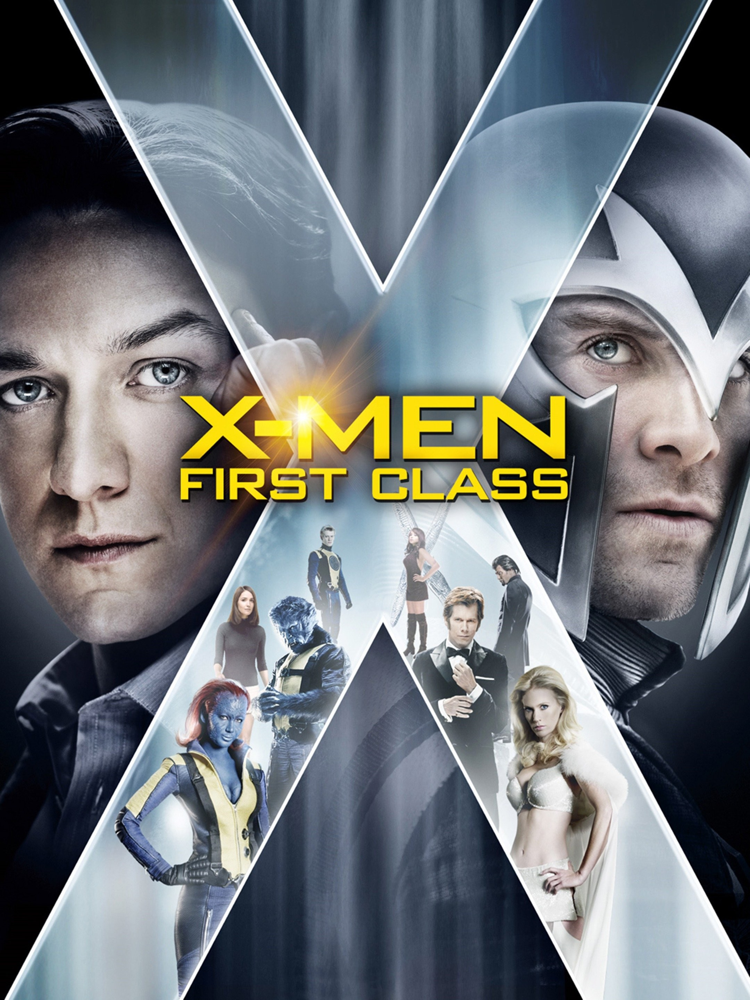
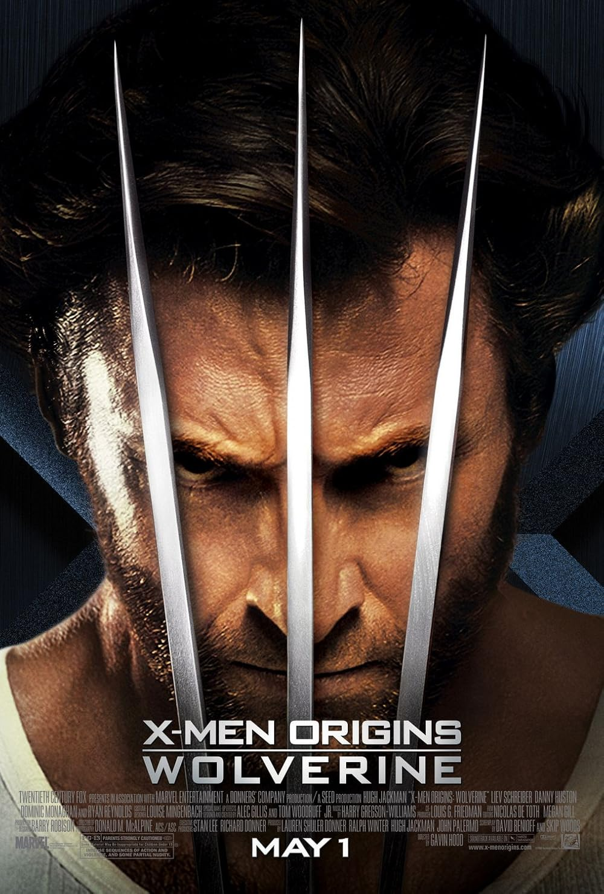
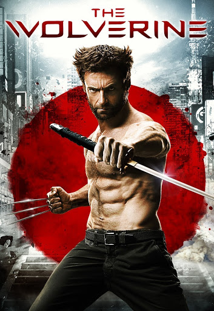
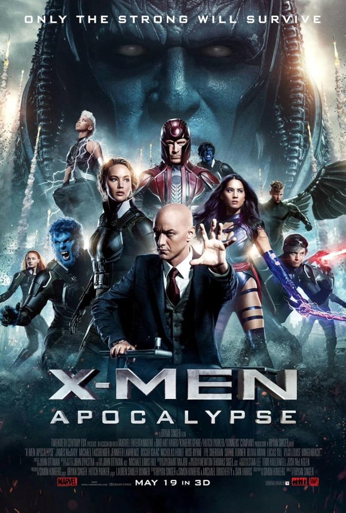
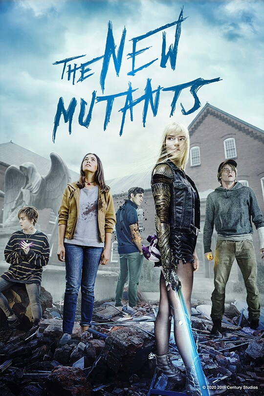

62 Essential Entries · Curated Watch Order · Click any card for details
Path to Doomsday
The definitive watch order — every film and series that matters before Avengers: Doomsday. Optional entries are marked but recommended. Watch in order.
Step 1 — Mutant Origins
Understand the X-Men world
01

X-Men: First Class
The birth of mutantkind. Xavier and Magneto's split.
02
X-Men: Days of Future Past
Timelines fracture — the concept of alternate realities introduced.
03
Optional

X-Men Origins: Wolverine
Logan's violent origin — optional but adds context.
04
Optional
X-Men (2000)
The original — builds the world of mutants.
05
Optional
X2: X-Men United
The best of the original trilogy — Weapon X explored.
06
Optional
X-Men: The Last Stand
The mutant cure divides everything.
07
Optional

The Wolverine
Logan's mortality explored — sets up Logan.
08
Optional

X-Men: Apocalypse
Ancient mutant threat. Young Xavier's team forms.
09
Optional
X-Men: Dark Phoenix
Jean Grey's cosmic power — end of this timeline.
10
Optional

The New Mutants
Horror-genre X-Men — closes the Fox era.
Step 2 — Avengers Foundation
The MCU core story
11
Captain America: The First Avenger
The Tesseract. The first hero. Everything begins.
12
Captain Marvel
The MCU's most powerful hero revealed. 1990s setting.
13
Iron Man
The MCU begins. Tony Stark changes everything.
14
Iron Man 2
Black Widow introduced. SHIELD expands.
15
The Incredible Hulk
Bruce Banner's struggle. Thunderbolt Ross established.
16
Thor
The God of Thunder arrives. Loki's first betrayal.
17
The Avengers
Heroes assemble. Thanos teased. The Mind Stone surfaces.
18
Thor: The Dark World
The Reality Stone (Aether) enters the MCU.
19
Iron Man 3
Tony's trauma. Extremis. The Mandarin twist.
20
Captain America: The Winter Soldier
Hydra inside SHIELD. Bucky revealed. World changes.
21
Guardians of the Galaxy
The cosmic MCU opens. Power Stone revealed.
22
Guardians of the Galaxy Vol. 2
Family above all. Ego — a living planet — arrives.